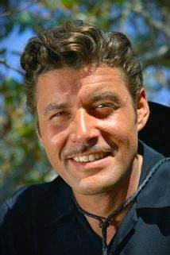
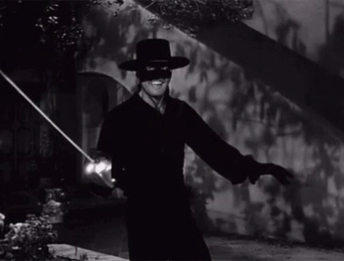

Guy Williams

33 años
California, EEUU
Intereses y hobbies
- Actuar
- Esgrima
- Equitacion
- Guitarra
- Ajedrez
Trabajos en Hollywood
- El Zorro, como Diego de la Vega "EL ZORRO"
- Bonzo goes to college, como Ronald Calkins
- The Mississippi gambler, como André
- The golden blade, como un poblador de Bagdad
- The man from The Alamo, como un sargento
- Take me to town, como un pequeño héroe
Sobre mi
Espero que mi legado como actor y mi trabajo en "El Zorro" sigan siendo recordados y disfrutados por muchas generaciones venideras. ¡Gracias por seguir apreciando mi trabajo y por ser un fanático del Zorro!
>>> Si queres saber mas sobre mi podes entrar al siguiente link MAS INFORACION
